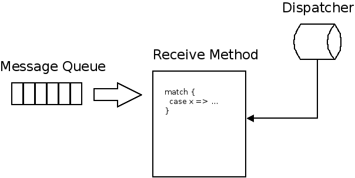
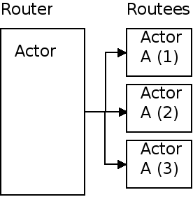

Moore's Law still applies but only the number of cores in a single chip is increasing
The Challenge (2)
Modern systems must be:
Fault tolerant
highly concurrent
truly scalable
Issue: Shared Mutable State
Multithreaded programs are hard to write and test
Non-deterministic
Race conditions
Locks are hard to use
We need a new high level programming model
easier to understand
deterministic
no shared/mutable state
fully utilize multi-core processors
Actors
Formalized in 1973 by Carl Hewitt
First commercial use by Ericsson, that invented Erlang
Akka is an Actor Model implementation in Scala
Actors (2)
Actors instead of Objects
No shared state between Actors
Asynchronous message passing
Location Transparancy
Actors (3)
Actor uses
a thread
an object instance or component
a callback
a singleton
a service
a router, load-balancer
a Finite State Machine
Anatomy of an Actor

Actor Code
import akka.actor.ActorSystem
import akka.actor.Actor
import akka.actor.Props
class myActor extends Actor {
def receive = {
case "Hello" => sender ! "world"
case x: String => println("Hello, " + x)
case _ =>
}
}
val system = ActorSystem("mySystem")
val myActor = system.actorOf(Props[myActor], "myactor1")
Send Messages
Tell: Fire and Forget
myActor ! "Jan"
Ask: Send and Receive Future
val future = myActor ? "Hello"
What about the Future
In the Scala Standard Library, a Future is a data structure used to retrieve the result of some concurrent operation. This result can be accessed synchronously (blocking) or asynchronously (non-blocking).
Synchronous Access
implicit val timeout = Timeout(5 seconds)
val future = myActor ? "Hello"
val result = Await.result(future, timeout.duration).asInstanceOf[String]
Asynchronous Access
With the map method
implicit val timeout = Timeout(5 seconds)
val future = myActor ? "Hello"
future.map {result => println(result)}
Asynchronous Access
With callbacks
implicit val timeout = Timeout(5 seconds)
val future = myActor ? "Hello"
future.onSuccess {
case result: String => println(result)
}
onFailure and onComplete callbacks are provided too
Routers
Routers are actors that "routes" messages to other actors. Akka offers different
routing strategies
Round Robin Router
Random Router
Smallest Mailbox Router
Broadcast Router
Routers

Creating a Router
val router = system.actorOf(Props[MyActor]
.withRouter(RoundRobinRouter(nrOfInstances = 5)))
router ! message
Supervision
Actors are organised in a hierarchical structure
Supervisors are regular actors that monitors other actors
When an actor creates another actor, it automatically becomes its supervisor
Monitored actors can be supervisors themselves too
Monitoring is based on "let it crash" concept (monitored actors throw an exception)
Supervisors define strategy how to handle the exceptions
Supervision (2)
Two kind of Strategies
OneForOneStrategy: if one of the supervised children goes down, only that child is acted on
OneForAllStrategy: if one of the supervised children goes down, all supervised children are acted on
Supervision (3)
override val supervisorStrategy =
OneForOneStrategy(maxNrOfRetries = 10, withinTimeRange = 1 minute) {
case _: ArithmeticException ⇒ Resume
case _: NullPointerException ⇒ Restart
case _: IllegalArgumentException ⇒ Stop
case _: Exception ⇒ Escalate
}
The Actor Lifecycle
preStart: Called when an actor is started, allowing you to do some initialization logic. The default implementation is empty.
postStop: Empty by default, allowing you to clean up resources. Called after stop has been called for the actor.
preRestart: Called right before a crashed actor is restarted. By default, it stops all children of that actor and then calls postStop to allow cleaning up of resources.
postRestart: Called immediately after an actor has been restarted. Simply calls preStart by default.